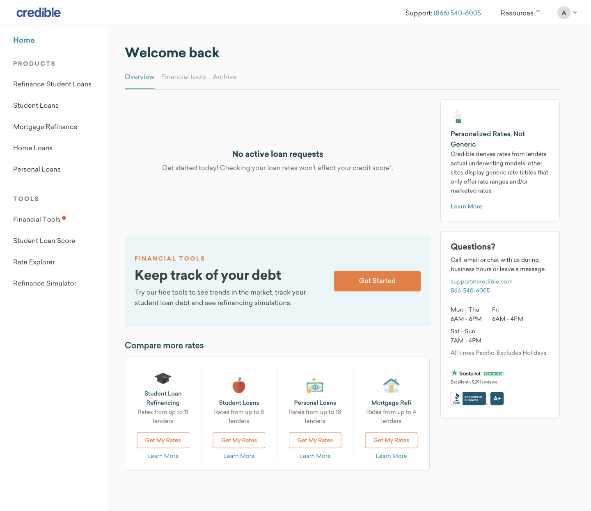
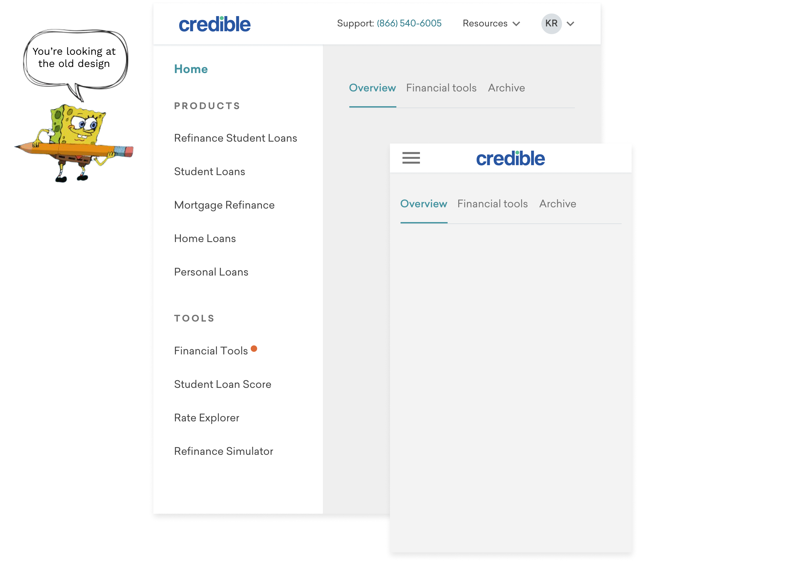

Credible is an online marketplace for comparing personalized loan rates
from multiple lenders, all in one place. Once a user selects the loan they
want, they are sent to the lender's site to finalize the offer — marking the
end point for many users' journies on Credible.
Problem
As part of the lifetime value (retention) team, one of our OKRs is to evolve
Credible’s transactional relationship with customers to that of a long-term
relationship. For this initiative, our marketers plan to increase the volume
of emails they send to people after they get a loan. These emails will lead
users back to Credible's hub (logged in experience), but the current hub
is barebone & lacks direction and usefulness for progressing one's financial
goals/needs. For this reason, I was tasked with improving the Credible hub.
Identifying the problem
I started this project by looking at the ui/ux of our current hub to identify
pain points and areas for opportunity. This helped me gain a deeper understanding
of the problem space and aid discussion of project goals with my PM.
Overview page for archived users
Overview page for active users
Financial tools page
Who is using the hub?
Next I worked with my PM & business intelligence to learn more about our
hub users:
What have they already done on Credible? Have they started a loan request?
How did they get to the hub? Where are they coming from?
Knowing their entry source helped me think through what the user's mindset
is and what needs/wants they have as they enter the hub. For example, 31% of
users with an active loan request are exiting their rates dashboard and
entering the hub. This suggests that they're unsure about their rate
options, which gives us the opportunity to a) provide info to make them
more confident in their options and/or b) show them other options.
Ideation & Prioritization
I brainstormed opportunities & improvements based on customer goals,
business objectives, and the pain points I identified.
For our largest user group, the archived users, I wanted to focus on optimizing
the loan request empty state (since it's the first thing they see) and
providing guidance (e.g. suggesting a product, leading them to a calculator,
etc.) Our next largest group of users are ones who currently have an active
loan request. Since these users are already in the funnel with a request in progress, I
wanted to focus on improving low hanging fruit in the hub to help them complete
their loan request and close on a loan.
Prioritizing features
I worked with my PM to determine which ideas we wanted to
test & then prioritized them based on what subset of users they help, how
much they might impact conversion and engineering effort:
Competitor Research
Before starting sketches, I looked at direct competitors, such as SoFi,
and other companies, like Credit Karma and Nerdwallet, that are in the personal
finance space but don't necessarily have a loans marketplace to get a sense of the landscape.
My key takeaways were...
Page structure: vertically stacked sections vs board with mix
of different modules
Content above the fold:
Focus is on what users are monitoring (e.g. credit score, finances)
“Let’s show all our different products”
Product recommendations based on the user's profile
Highlight blog articles
Presenting other products:
Show multiple products in one section
Give one product its own section for greater emphasis
Show specific offers (e.g. "Get a rate as low as 5%")
Calculators: placed strategically where the users could need them
Design explorations
(Note: Credible went through a rebrand during this
project, which is why you'll see our "Crediberry" pink instead of the orange
seen in earlier screenshots)
Loan request empty state
The current empty state has plain text stating "No active loan requests"
and "Get started today!", but doesn't include any actual CTA to start
a request. My redesign goal for this section was to show the user what our
different products are and give them paths to start a request for those products.
For my explorations, I tried different visual treatments and CTA types—even
considering embedding the first question of the form itself.
My biggest takeaways from these explorations were:
Due to the amount of products Credible has, having primary and secondary
CTAs for each product (see option two) make the section vertically long &
overwhelming with the amount of buttons. So I iterated on using either the
link or ">" approach for less visual clutter & removing the secondary
"Learn More" CTA since a) we want more people to start the form and b)
the start of the form provides education about the loan and the process
Our simpler iconography (see options two and four) is less visually
overwhelming and less distracting than our more detailed pictographs
Displaying the first question of the form could help with getting more people
in the funnel, but it gives less visbility to the other loan options.
Plus our model for recommending products is in its starting phases, so I
wouldn't want to strongly market one loan option over the rest
Loan request active state
We have 5 types of loan requests and each one has a different process, so
before jumping into designs I met with the PM and designer for each vertical
to understand:
What the steps of the request process are
What information is important for the user to know at each step
What our intended goal is for the user at each step
What pain points (if any) the user has at each step
Brainstorm—What's important for the user at each stage of their loan request?
Now that I had a better understanding of the different loan request
processes, I was able to start designing! For my explorations, I tried different
visual treatments for communicating to the user where they're at in the
process, providing info from their dashboard to encourage them to continue on,
clarity on what their next step is, and emphasizing the best rate guarantee
value prop.
Most of my iterations for this tile centered around how to show the user
useful info from their rates dashboard. The challenges I faced were making
this info easy to digest/understand, as well as meet legal requirements.
For example, I initally listed out what the lowest APR and lowest monthly
payment were (as these are two data points important to the user), but
legal reviewed it and we weren't able to display the APR and monthly payment by
themselves — they must be coupled together. So I pivoted the designs to show
the option with the lowest APR and the option with the lowest monthly payment.
Financial tools
This section currently displays a simple banner with general value props about
our financial tools. For my initial explorations (see options one and two),
I iterated on this banner approach and focused my changes on better communicating
the benefits of the financial tools and making the ui more eye-catching
(e.g. using a colored background so it stands out the majority white tiles on the hub).
For my other explorations (see option four), I focused on highlighting the
specific monitoring tools we offer (Debt Tracker & Credit Score), since users
mentioned in interviews that they like to track this information. By emphasizing
these tools, I hope to see more engagement with our financial tools.
Navigation
I first thought about if we should keep the current left-side nav design
or change it to a top nav design (similar to our logged out pages). I
decided to keep the left-side nav because:
Vertical navigation allows for scalability. It will be easy to add new
hub features to the vertical nav whereas we'd eventually run out of room
with a horizontal one.
It's easier for people to search through a vertical list than a horizontal one.
Vertical navigation translates well to mobile
My biggest takeaways from these explorations were:
"Home" should be grouped with the rest of the hub pages instead of sitting by itself
The spacing between links can be improved to create visual balance and make the groupings more clear
The active state is most noticeable with the light blue background
Icons make the nav feel cluttered. Is there a way to make it feel more clean?
Final designs
After multiple design iterations, copy review, and legal sign-off, here are the final designs I handed off to the engineering team:
Previous

Final
Mobile designs
A closer look at the final designs
Loan request empty state: This section
is shown to users without an active loan request and features paths to start
a new request for the various Credible products
Changed the "No active loan requests" headline to be more action oriented
Added our "prequalified rates" value prop to the subheadline
since it's a distinguishing factor from competitor sites offering generic rates
CTAs to all core and ancillary products — short descriptions for each
product & added an '>' arrow to make the clickable affordance clear
Included a path to our Money Plan quiz as guidance for users who don't
know where to start. Taking this quiz let's them see which loan products
they have the best chances of prequalifying for.
Loan request active state: This section is
shown to users with an active loan request and shows them what their next
step in the process is
For requests that are eligible for Best Rate Guarantee (BRG), a BRG badge
is added to the tile. This offering was previously missed by users when
marketed on the right rail, so this treatment will give it more visibility
and be better perceived as related to the loan request (following the
logic of the proximity principle).
Added a progress bar as a quick visual indicator for where they're at in
the process
Hid the request timeline behind a "Learn more" link since we want to
focus attention on just the next step instead of overwhelming them with
all future steps
Included key info at each stage of their request:
Received rates: Give a preview of what their rate options are.
Showing the lowest APR and lowest monthly payment options since the
most commonly selected options
Lender selected: Nudge them to finish their request by showing
the option they selected
Loan funded: Cross sell debt tracker so they can track their
loan on Credible
Financial tools section: This is a new section that
will be shown to all users and features Credible's tracking tools
"New" pill will show until the user activates one of their financial tools
Chose to feature our debt tracker and credit score in this
snapshot since account balances and credit score were frequently brought
up in user interviews as something people find important to monitor
By highlighting our monitoring tools on the home page, I hypothesize we'll see
increased activation of these tools leading to more repeat
engagement on Credible
Calculators section: This is a new section
that will be shown to all users and surfaces relevant calculators based on
their profile
Included the most relevant calculator directly on the page so they can
quickly recognize it's value/see how it functions & interact with it right away
Recommend 2 other calculators & provide a path to view all calculators
Resources section: This section will be shown
to all users and surfaces relevant blog articles based on their profile
Added the corresponding blog image for quicker recognition to what the
article is about
Removed the lengthy description from the tile since our blog titles are
seo optimized therefore decently descriptive by themselves

Desktop navigation: I focused on establishing
an information hiearchy that's easy to follow and makes the hub tools appear
most important
Updated the active state ui (bold font + light blue background) so
that it has better contrast from the inactive state
Reduced the spacing and modified the typography so that the 2 groups
of links ("My Credible Hub" vs "Compare Rates") are more clear
Reordered the nav so that the hub tools are listed before the products
since our priority for the user is to engage with the hub tools
Added icons to the hub links to aid recognition and so they appear more
prominent than the product links
Consolidated the links to individual calculators with one link to the
calculators page & now have links to individual financial tools since I want
to prioritize engagement with the tools over the calculators
Mobile navigation: Redesigned the tabs at
the top of the page to be a bottom nav more similar to a native app
Renamed "Overview" to "Home" to be consistent with the naming
established in the side nav
Replaced "Archive" with "Calculators" since viewing archived loan requests
aren't important while financial calculators are more useful resources
Designed the active state ui to match the visual treatment done on desktop
Learnings
The three phases of the hub redesign were each rolled out as a/b tests. So
far we've seen success with the redesigned loan request empty state (with
more people entering the funnel and starting a loan application) and the
financial tools section (with more people activating these tools & coming
back to Credible to see credit score/account updates).
On the flip side, we've seen a decrease in conversion with the redesigned
loan request active state. One hypothesis is that due to poor market conditions,
the "best options" we show aren't very good, so it deters people from wanting
to see the other options. This suggests we might want to test showing other
info (either from their dashboard or maybe educational tips) or even reverting
back to showing no information from their dashboard.